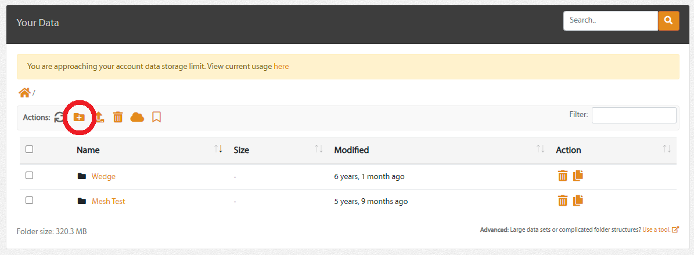
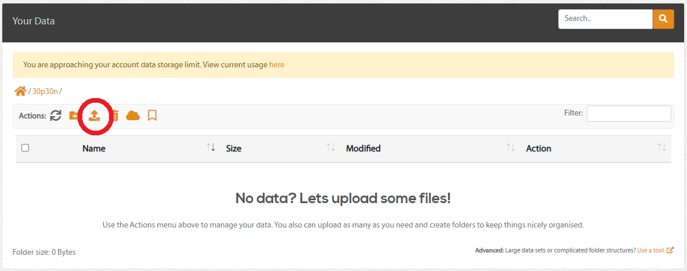
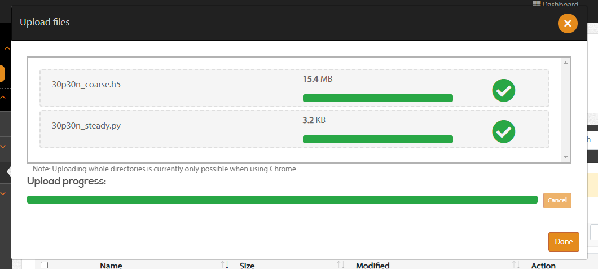
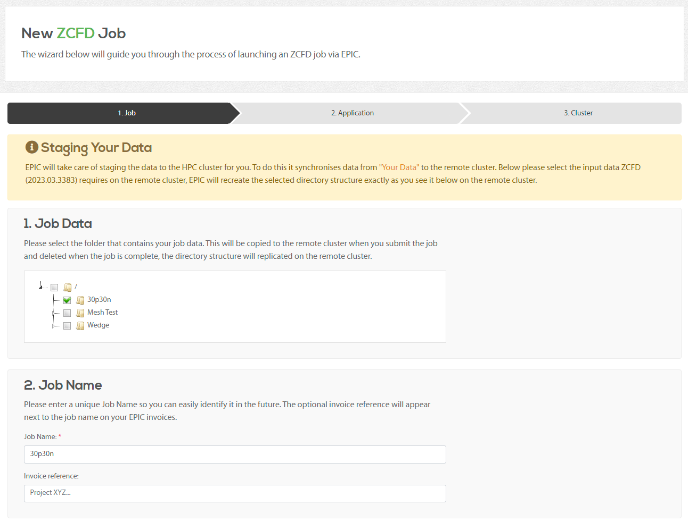
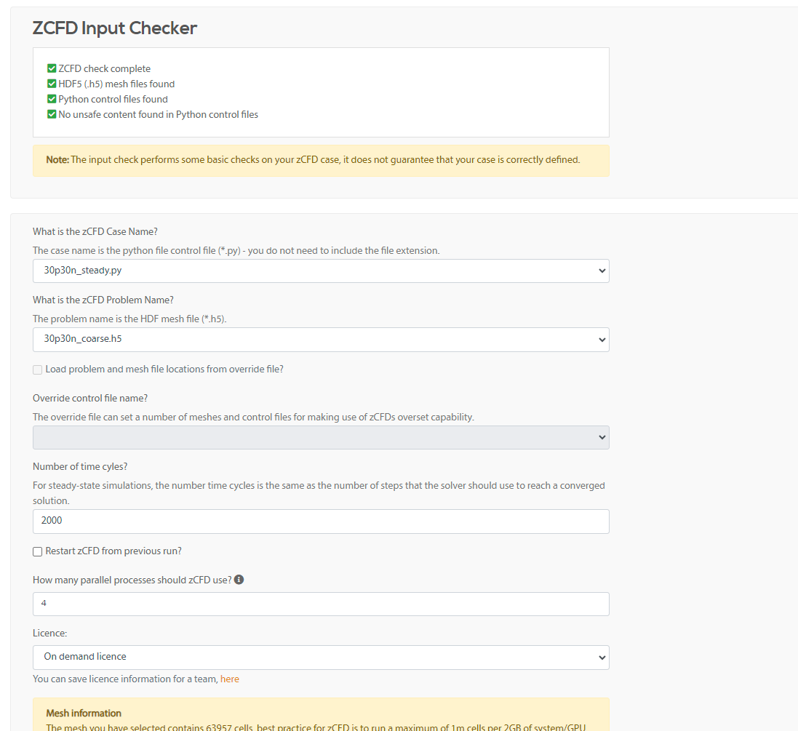
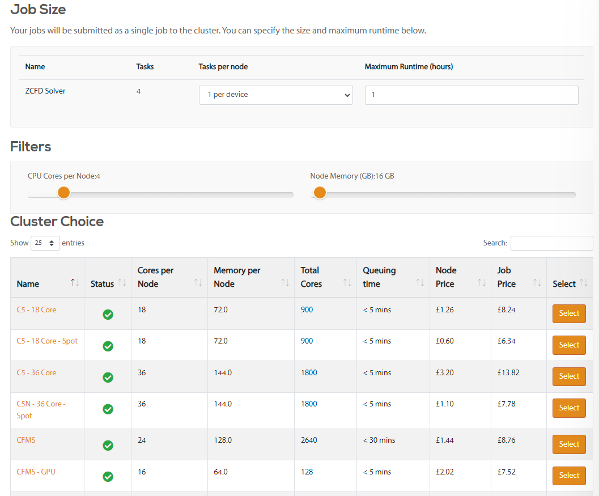
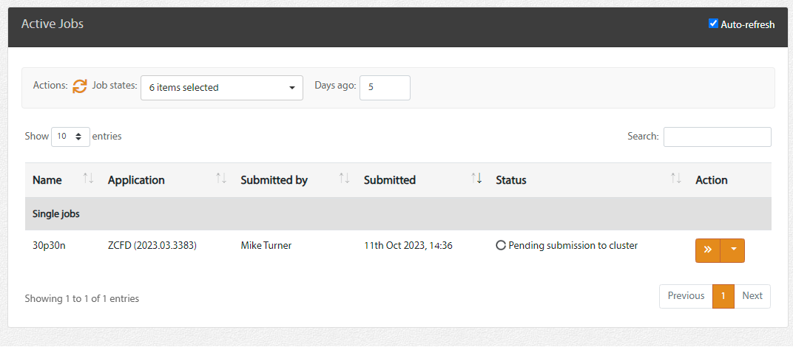
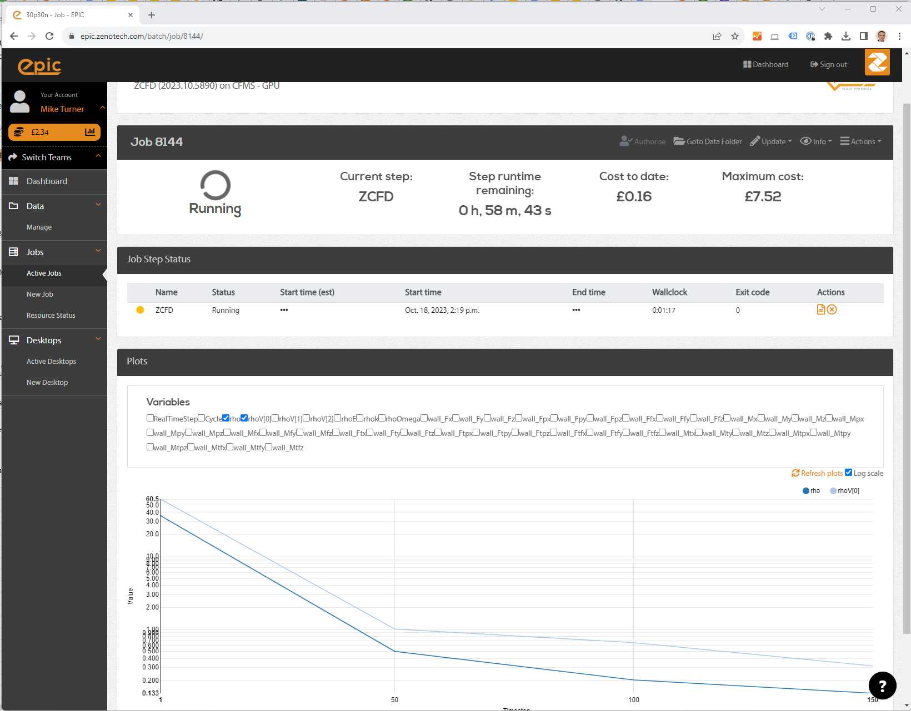
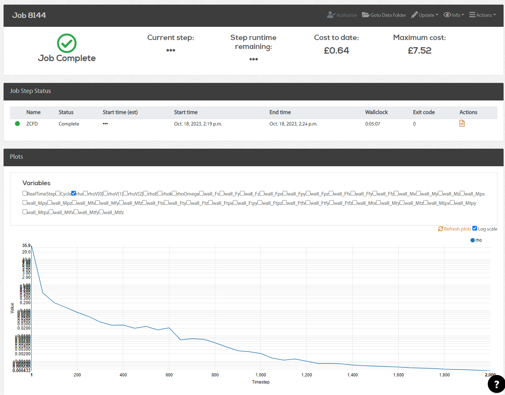

Running zCFD using EPIC¶
What is in this tutorial?¶
This tutorial will show how to run zCFD using EPIC. EPIC provides access to a range of High Performance Computing systems allowing you to run your zCFD jobs at a large scale. This enables you to run your simulations faster or do larger simulations. EPIC also enables you to start EPIC Desktops please see here, that are Linux desktop nodes running in the cloud and are great for pre or post processing simulations or even running zCFD jobs.
What you need?¶
You will need an account on EPIC for this tutorial, you can sign up for free here. For this tutorial we will be running the 30p30n case used in tutorial 2. We will use the on-demand licence version of zCFD and so there is no need to have a pre-existing zCFD licence.
Step 1. Download the tutorial files¶
The tutorial 2 zip file can be downloaded here. The zip file contains a mesh file (30p30n_coarse.h5) and a zCFD control file (30p30n_steady.py).
Download and unzip the file to your local computer.
Step 2. Upload the files to EPIC¶
Files can be uploaded to EPIC in a variety of ways:
Via the web portal
Using the EPIC command line interface, EPIC CLI.
Using Python and the PyEPIC library
Since the input files are small in our case we will upload them via the browser, if the files were larger than 500MB then the other methods are recommended.
To upload the files, log in to EPIC and the select Data->Manage on the left hand menu bar. This will show the Your Data view. This lists all of the data you have stored in EPIC.
Click on the “Add folder” button, shown below, to create a new folder, and name it “30p30n”.
This will create a new folder and change your view to show you the contents, it should currently be empty. To upload some data click on the “Upload Files” button, shown below.
Drag and drop the mesh and control files from your local computer into the dialog box that shows, this will trigger the upload from your local machine to the EPIC data store. Once the upload is complete the dialog should look like this:
Click “Done” and you will go back to the data view, you should now be able to see your input files in EPIC.
Step 3. Submit a zCFD job¶
The next step is to create a new zCFD job. Click on “New Job” on the left hand menu bar. This will take you to the application selection screen. Select the most recent version of zCFD from the options available.
On the next screen select the folder containing the data you have just uploaded by checking the checkbox next to it:
This tells EPIC where the job inputs are. You can leave the rest of the settings as they are, or update the job name if you want to.
When you click “Next” EPIC will start the zCFD Input Checker, this validates the input folder you have selected and presents you with zCFD specific choices.
Here you can set the python control dictionary, the mesh and set the number of cycles to run. You can also change the number of parallel processes to use when executing zCFD.
For our example update the cycles to 2000 and the number of parallel processes to 4. The fields should now look like this:
You will then see the cluster selection page, this lists all of the high performance computing resources available to run your job. On the previous page asked for 4 parallel processes, on the Cluster page we can say how we want these distributed and what the maximum runtime of our job will be. For zCFD lets leave the “Tasks per node” as “1 per device”, this will put one parallel process per CPU socket or GPU. Our job is quite small and should complete easily within 1 hour, so we can leave the Maximum Runtime as 1.
For our example we will select the “CFMS - GPU” cluster from the list by clicking “Select” next to it. EPIC will then show us the cost breakdown for the job, click “Submit Job” to continue.
You job will now be submitted to the selected cluster. EPIC will transfer the data, submit the job to the cluster and monitor the progress.
Step 4. Monitor the job¶
You can see your active and recent jobs by clicking on “Active Jobs” on the left hand side bar. Click on the “>>” next to the job to see the detailed job status.
Here you can see the current status of the job, view the job logs, view the residual plots of the job while it is running and cancel or update the job.
Step 5. Look at the results¶
Once the job is complete EPIC will upload the results from the cluster back to EPIC, you can click on the “Goto data folder” link at the top of the job status page to view the files and download them to your local machine using the browser.
An alternative method is to start an EPIC desktop node by clicking on “New Desktop” on the left hand tool bar. For more information about using the Desktop see here.

{kind=link}
{kind=link}
{kind=link}
{kind=link}
{kind=link}
{kind=link}
{kind=link}
{kind=link}
{kind=link}